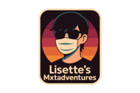

⬅️
The Daily Blogroll — Sunday, 5 Oct 2025
➡️
Wilhelm reviews 'Kaos,' a Greek mythology series with Jeff Goldblum adding a quirky 70s twist to Olympus's divine drama.
Anarchae celebrates updates to Bearblog's theme, delving into CSS tweaks and longing for the days of curated online link lists.
Emily shares her begrudging acceptance of Spotify, highlighting its music discovery perks despite her issues with artist compensation.
Tofutush humorously recounts their first driving lesson, highlighting typical beginner mishaps while keeping the roads intact.
Jamie Zawinski critiques Bluesky's facade of decentralization, calling out CEO Jay Graber's contentious practices and questionable leadership.
Bruce Schneier discusses the pitfalls of supply chain over-optimization, cleverly tying it into Friday's squid-themed musings.
Dave Winer shares his surprise at preferring the VW ID.Buzz after test-driving several EVs, hinting at possibly trading in his Tesla.

Crimson reflects on writing fanfics in Spanish amidst a scarcity of engagement, emphasizing the need for more non-English fan content.